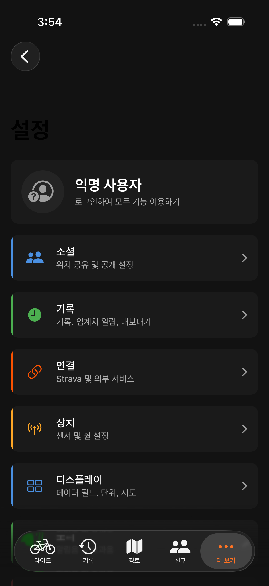
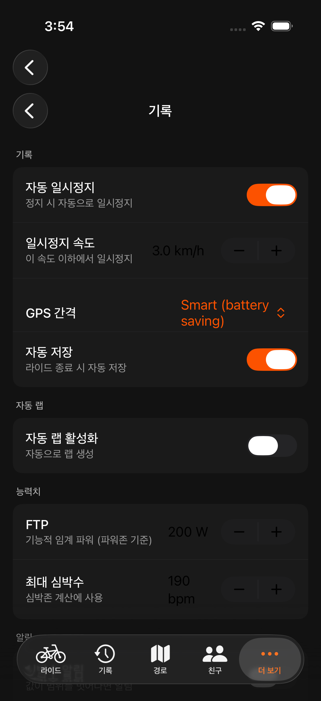
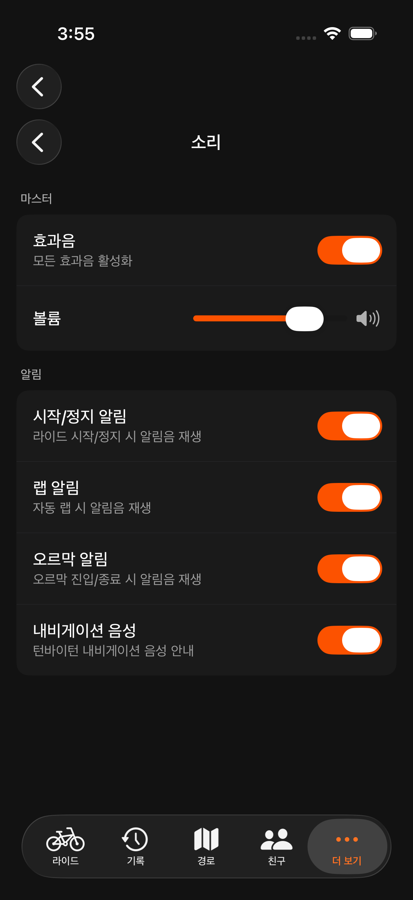
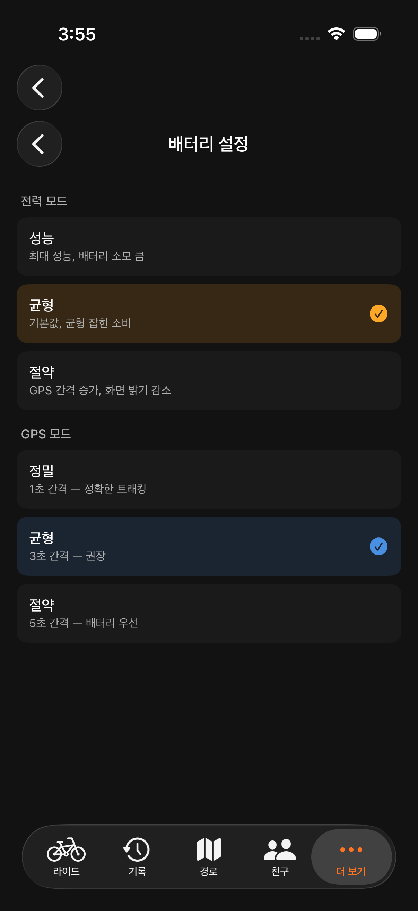
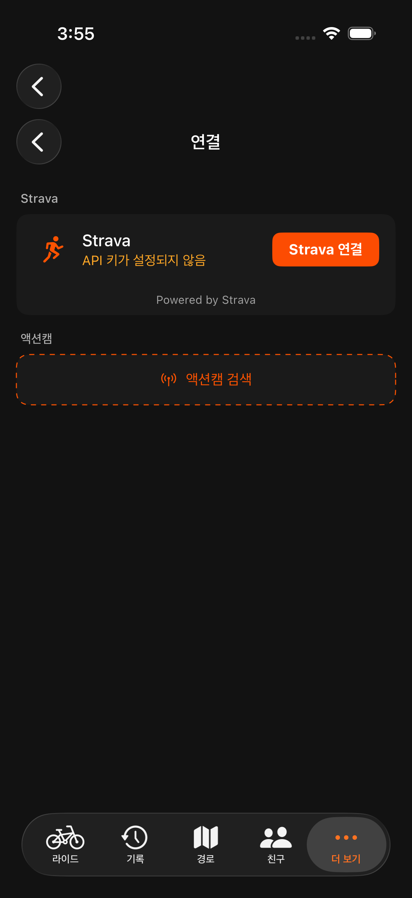
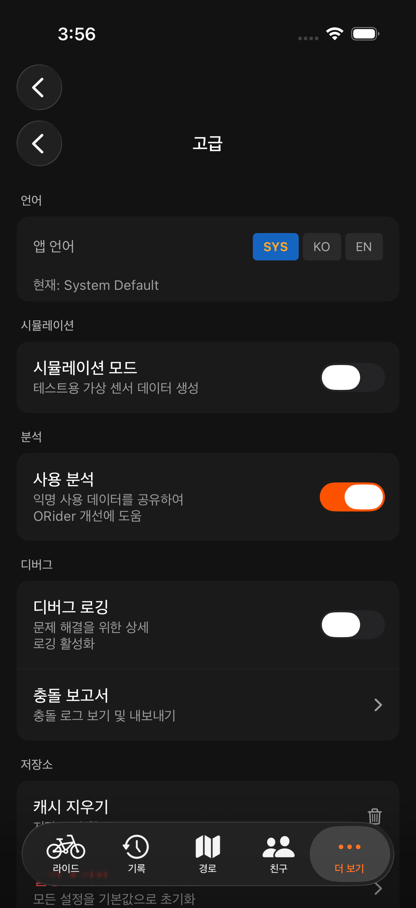
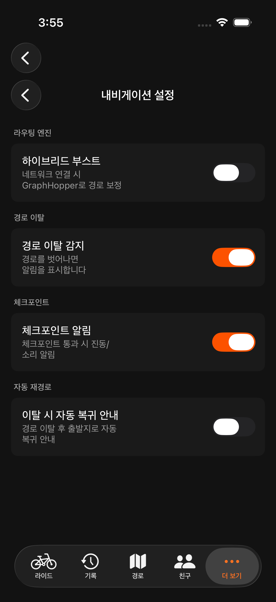
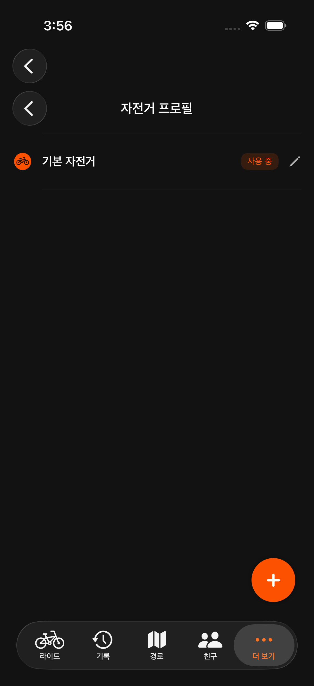

Orider iOS의 설정은 설정 탭에 섹션 목록으로 정리되어 있습니다. 처음에는 기본값 그대로 사용하다가, 필요한 부분만 조금씩 조정해 보세요.
| 섹션 | 내용 |
|---|---|
| 소셜 (Social) | 친구 관리, 그룹 |
| 기록 (Records) | 주행 파라미터(FTP·최대심박), 자동 일시정지/랩, 수치 알림, 활동 공개범위 |
| 연결 (Connection) | 계정 로그인, Strava, 액션캠 |
| 장치 (Device) | 센서 페어링, 휠 둘레 |
| 디스플레이 (Display) | 데이터 필드(레이아웃 에디터), 지도 스타일, 단위 |
| 사운드 (Sound) | 알림음, 음성 안내 |
| 레이더 (Radar) | 후방 레이더 표시 옵션 |
| 배터리 (Battery) | GPS 모드, 화면 밝기·자동꺼짐 |
| 전원 관리 (Power) | 항목별 네트워크 정책(데이터 절약) |
| 내비게이션 (Navigation) | 자전거 프로파일, 음성 안내, 경로 보정(Hybrid Boost) |
| 자전거 프로파일 (Bike Profile) | 자전거별 센서·휠 둘레·가상 파워 묶음 |
| 고급 (Advanced) | 경량 모드, 시뮬레이션, 언어, 분석, 크래시 로그, 앱 정보 |
| 계정 | Apple/Google 로그인·로그아웃, 웹 대시보드 |

주행의 기본 파라미터를 설정합니다. 파워 존과 심박 존을 정확하게 활용하려면 FTP와 최대 심박수를 꼭 입력하세요.
| 항목 | 기본값 | 설명 |
|---|---|---|
| FTP | 200 W | 기능적 역치 파워. 파워 존 계산에 사용 |
| 최대 심박수 | 190 bpm | 심박 존 계산에 사용 |
| 라이더 체중 | 70 kg | 가상 파워 계산에 사용 |
| 자전거 무게 | 9 kg | 가상 파워 계산에 사용 |
| 자동 일시정지 | 3.0 km/h / 3초 | 속도 임계값과 지연 시간 |
| 자동 랩 | 끔 | 거리 또는 시간 기준 |
| 수치 알림 | 끔 | 심박/파워/케이던스/속도 임계값 설정 |

라이딩 중 화면을 보지 않아도 중요한 이벤트를 소리로 알 수 있습니다.
| 항목 | 기본값 | 설명 |
|---|---|---|
| 사운드 사용 | 켬 | 전체 사운드 켜기/끄기 |
| 볼륨 | 80% | 알림음 볼륨 (0~100%) |
| 시작 소리 | 글로켄슈필 C-G | 주행 시작 알림음 |
| 종료 소리 | 글로켄슈필 G-C | 주행 종료 알림음 |
| 랩 소리 | 글로켄슈필 E | 랩 완료 알림음 |
| 오르막 시작 | 글로켄슈필 E-A | 오르막 진입 알림음 |
| 오르막 종료 | 글로켄슈필 C-E-C | 오르막 완료 알림음 |
| 레이더 알림 | 경고 벨 | 후방 차량 접근 알림음 |

장거리 라이딩에서 배터리가 부족해지는 것을 방지하기 위한 설정입니다. 상황에 맞는 프리셋을 선택하거나 개별 항목을 직접 조정할 수 있습니다.
프리셋을 선택하면 아래 항목이 자동으로 설정됩니다. 개별 항목을 직접 변경하면 자동으로 "사용자 정의"로 전환됩니다.
| 프리셋 | GPS | 밝기 | 화면 | 위치공유 | 날씨 | 추천 상황 |
|---|---|---|---|---|---|---|
| 표준 | 고정밀 | 시스템 | 항상 켜짐 | 모든 네트워크 | 모든 네트워크 | 일반 주행 |
| 절약 | 균형 | 50% | 시스템 기본 | 끔 | 끔 | 장거리 (100km+) |
| 대시보드 | 끄기 | 50% | 시스템 기본 | 끔 | 끔 | 실내 트레이너, 최대 절전 |
| 사용자 정의 | 직접 선택 | 직접 선택 | 직접 선택 | 직접 선택 | 직접 선택 | 세밀한 조정 필요 시 |
| 항목 | 옵션 | 설명 |
|---|---|---|
| GPS 모드 | 고정밀 / 균형 / 끄기 | |
| 고정밀 | 최고 정확도, 배터리 소모 높음. 정확한 경로 기록이 필요한 일반 주행에 추천 | |
| 균형 | 적당한 정확도, 배터리 절약. 장거리에서 배터리가 걱정될 때 | |
| 끄기 | GPS 비활성화. 속도/거리는 휠 센서로만 측정. 지도·경로 기록 불가 | |
| 화면 밝기 | 시스템 / 80% / 50% | |
| 시스템 | 기기 자동 밝기에 맡김 | |
| 80% | 야외에서 잘 보이는 밝기, 거치대 사용 시 추천 | |
| 50% | 배터리 절약용. 직사광선 아래에서는 보기 어려울 수 있음 | |
| 화면 자동꺼짐 | 항상 켜짐 / 시스템 기본 | |
| 항상 켜짐 | 주행 중 화면이 꺼지지 않음. 거치대 사용 시 추천 | |
| 시스템 기본 | 기기 설정에 따라 자동 꺼짐. 주머니에 넣고 달릴 때 추천 |
모바일 데이터 사용량이 걱정될 때, 항목별로 네트워크 정책을 개별 설정할 수 있습니다. 화면 상단에 현재 네트워크 상태(Wi-Fi / 셀룰러 / 없음)가 색상으로 표시됩니다.
| 모드 | 설명 |
|---|---|
| 모든 네트워크 | Wi-Fi와 셀룰러 모두 허용 (기본값) |
| Wi-Fi만 | Wi-Fi 연결 시에만 데이터 전송 |
| 오프라인 | 해당 항목의 네트워크 사용 완전 차단 |
| 항목 | 용도 | 기본값 | 추천 설정 |
|---|---|---|---|
| 지도 타일 | 지도 이미지 다운로드 | 모든 네트워크 | 오프라인 지도를 미리 받아두면 "오프라인"으로 설정 가능 |
| 날씨 정보 | 기온, 바람, 강수량 조회 | 모든 네트워크 | 데이터 소모 적음(시간당 ~1MB). "모든 네트워크" 유지 추천 |
| 위치 공유 | 친구/그룹에 실시간 위치 전송 | 모든 네트워크 | 그룹 라이딩 시 "모든 네트워크", 솔로 라이딩 시 "오프라인" |
| Strava 업로드 | 주행 기록 업로드 | Wi-Fi만 | 기본값 유지 추천. 데이터 요금제 여유 시 "모든 네트워크" |

orider.co.kr에서 같은 계정으로 로그인하면 더 큰 화면으로 라이딩 기록을 분석하고, 경로를 관리하거나 통계를 확인할 수 있습니다. 앱과 동일한 계정으로 로그인하면 기록이 자동으로 연동됩니다.

Orider는 한국어와 영어를 지원합니다. 모든 UI 텍스트, 데이터 필드 이름, 설정 메뉴가 선택한 언어로 표시됩니다.
| 옵션 | 설명 |
|---|---|
| Auto (시스템) | 기기의 시스템 언어를 따름. 한국어/영어가 아닌 경우 영어로 표시 |
| 한국어 | 모든 UI를 한국어로 표시 |
| EN (English) | 모든 UI를 영어로 표시 |
언어를 변경하면 즉시 적용되며, 앱을 재시작할 필요 없습니다.
| 항목 | 설명 |
|---|---|
| 경량 모드 | 배터리/데이터 절약 모드 (그룹 참여 시 활성화 가능, 상세 안내) |
| 시뮬레이션 모드 | 센서 없이 가상 데이터로 앱 기능 테스트 |
| 분석 | 앱 사용 분석 데이터 수집 설정 (켜기/끄기) |
| 크래시 로그 | 앱 오류 로그 확인. 문제 발생 시 개발자에게 공유할 수 있습니다 |
| 앱 정보 | 현재 버전, 이용약관, 개인정보처리방침, 오픈소스 라이선스 |

경로 안내(내비게이션) 동작을 세밀하게 조정합니다.
| 항목 | 설명 |
|---|---|
| 자전거 프로파일 | 로드/MTB/그래블 등 자전거 유형을 선택하면 경로 보정·안내가 해당 주행 특성에 맞게 동작합니다. |
| 음성 안내 | 턴바이턴 음성 안내 켜기/끄기 및 안내 시점 조정. |
| 경로 보정 (Hybrid Boost) | 불러온 경로를 실제 도로망에 맞춰 보정해 더 정확한 턴 안내를 제공합니다. 네트워크가 필요하며, 끄면 원본 경로 그대로 안내합니다. |

자전거를 여러 대 쓴다면 각 자전거를 프로파일로 저장해 두고 전환할 수 있습니다. 프로파일에는 그 자전거에 연결한 센서, 휠 둘레, 가상 파워 설정이 함께 묶입니다. 설정 → 센서(또는 내비게이션 설정)의 자전거 프로파일 카드에서 관리합니다.